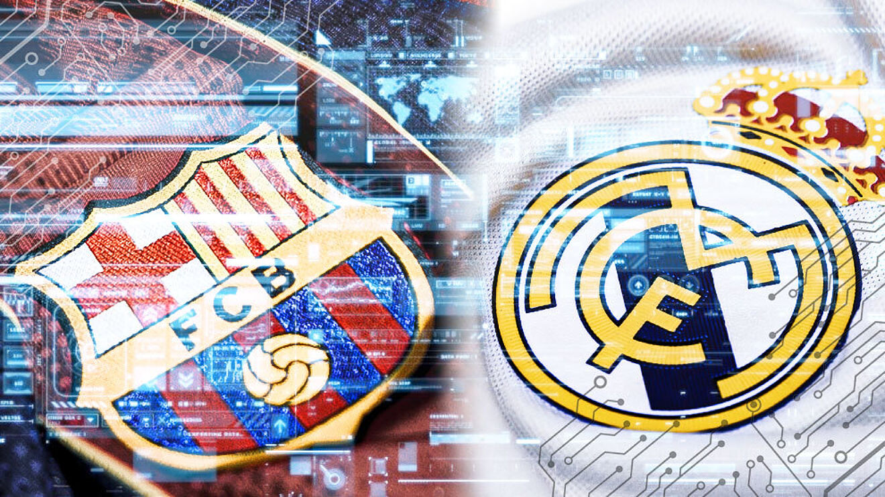
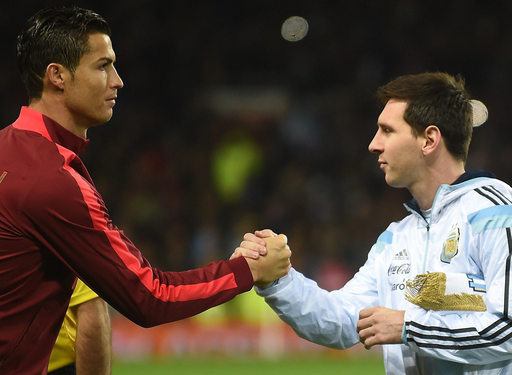

El Clásico or el clásico; Catalan: El Clàssic,is the name given in football to any match between fierce rivals FC Barcelona and Real Madrid. Originally it referred only to those competitions held in the Spanish championship, but nowadays the term has been generalized, and tends to include every single match between the two clubs: UEFA Champions League, Copa del Rey, etc. Other than the UEFA Champions League Final, it is considered one of the biggest club football games in the world, and is among the most viewed annual sporting events.A fixture known for its intensity, it has featured memorable goal celebrations from both teams, often involving mocking the opposition.
 
The rivalry comes about as Madrid and Barcelona are the two largest cities in Spain, and they are sometimes identified with opposing political positions, with Real Madrid viewed as representing Spanish nationalism and Barcelona viewed as representing Catalan nationalism.The rivalry is regarded as one of the biggest in world sport. The two clubs are among the richest and most successful football clubs in the world; in 2014 Forbes ranked Barcelona and Real Madrid the world's two most valuable sports teams. Both clubs have a global fanbase; they are the world's two most followed sports teams on social media.
Real Madrid leads in head-to-head results in competitive matches with 98 wins to Barcelona's 96; Barcelona leads in exhibition matches with 19 victories to Madrid's 4 and in total matches with 115 wins to Madrid's 102 as of the match played on 10 April 2021. Along with Athletic Bilbao, they are the only clubs in La Liga to have never been relegated.